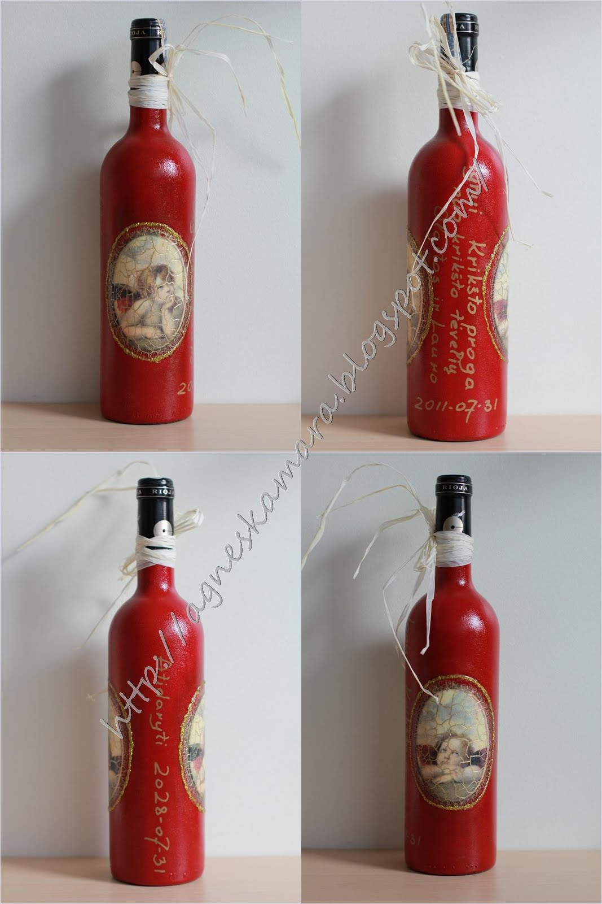

„Dešra butelyje“: paprastas ir skanus kitokios dešros receptas
 Naujienos Lietuvoje Sveikata Politika Žmonės Kriminalai Kultūra Užsienyje Verslas Sportas Koronavirusas Naujausi Straipsniai Dienos Horoskopas Horoskopai Dienos Horoskopas Rytojaus Horoskopas Savaitės Horoskopas Mėnesio horoskopas Zodiako Ženklai Avinas Jautis Dvyniai Vėžys Liūtas Mergelė Svarstyklės Skorpionas Šaulys Ožiaragis Vandenis Žuvys Visi horoskopai KIEMAS ir SODAS Receptai Desertai Mėsos patiekalai Vištienos patiekalai Paukštienos patiekalai Kiaulienos patiekalai Jautienos patiekalai Patiekalai pusryčiams Pyragai Sausainiai Blynai Sriubos Salotos Bulviniai patiekalai Žuvies patiekalai Konservuoti patiekalai Patiekalai iš daržovių Vegetariški patiekalai Užkandžiai Testai Įdomybės Žmonių istorijos Sveikata Dietos ir svorio metimas Patarimai Gėlės ir augalai Grožis Stilius Manikiūras Makiažas Plaukai ir šukuosenos Grožio procedūros namuose Santykiai Tėvai ir Vaikai Augintiniai Namai Interjeras Prieš ir Po Idėjos mažai erdvei Naujienos Lietuvoje Sveikata Politika Žmonės Kriminalai Kultūra Užsienyje Verslas Sportas Koronavirusas Naujausi Straipsniai Dienos Horoskopas Horoskopai Dienos Horoskopas Rytojaus Horoskopas Savaitės Horoskopas Mėnesio horoskopas Zodiako Ženklai Avinas Jautis Dvyniai Vėžys Liūtas Mergelė Svarstyklės Skorpionas Šaulys Ožiaragis Vandenis Žuvys Visi horoskopai KIEMAS ir SODAS Receptai Desertai Mėsos patiekalai Vištienos patiekalai Paukštienos patiekalai Kiaulienos patiekalai Jautienos patiekalai Patiekalai pusryčiams Pyragai Sausainiai Blynai Sriubos Salotos Bulviniai patiekalai Žuvies patiekalai Konservuoti patiekalai Patiekalai iš daržovių Vegetariški patiekalai Užkandžiai Testai Įdomybės Žmonių istorijos Sveikata Dietos ir svorio metimas Patarimai Gėlės ir augalai Grožis Stilius Manikiūras Makiažas Plaukai ir šukuosenos Grožio procedūros namuose Santykiai Tėvai ir Vaikai Augintiniai Namai Interjeras Prieš ir Po Idėjos mažai erdvei Koronaviruso plitimo žemėlapis gyvai! Pradžia Mėsos patiekalai Kiaulienos patiekalai „Dešra butelyje“: paprastas ir skanus kitokios dešros receptas„Dešra butelyje“: paprastas ir skanus kitokios dešros receptas
10 rugsėjo, 2020Kiekvienas gali lengvai pasigaminti sotų ir skanų užkandį iš kiaulienos pagal šį receptą. Nusipirkę visus reikiamus ingredientus, taip pat susiradę reikiamus indus bei įrankius ir radę tinkamą plastikinį buteliuką, galite pradėti darbus virtuvėje! Garantuojame, kad dešra savo skoniu tikrai nenusileis pirktinėms dešroms.
Jums reikės: 2 vnt. kiaulės kulninės arba apie 3,5 kg 2–3 lauro lapų 1 svogūno 2 valg. š. druskos 10 skiltelių česnako 4–6 žirnelių juodųjų pipirų
Jei turimi kulninės gabalai netelpa į puodą – suskaldykite juos kirviu ar padalinkite naudodami peilį į tokio dydžio gabaliukus, kad tilptų į puodą. Užpilkite mėsą vandeniu ir palikite kambario temperatūroje maždaug valandai laiko.
Po valandos vandenį puode pakeiskite nauju. Į puodą įberkite druskos, pipirų, lauro lapų bei įdėkite svogūną. Mėsą su prieskoniais virkite ant silpnos ugnies maždaug 3,5–4 valandas. Išvirusią mėsą išgriebkite iš sultinio ir palikite atvėsti. Kai mėsa atvės, nuimkite ją nuo kaulų, o didelius mėsos gabalus dar šiek tiek susmulkinkite.
Nukaulintą mėsą dėkite į dubenį, ten pat berkite susmulkintus česnakus bei užpilkite šaukštą sultinio. Viską gerai sumaišykite. Tada gautą masę sudėkite į turimą plastikinį butelį nupjautu kaklu. Tokiam kiekiui mėsos greičiausiai reikės 2–3 butelių. Dėdami mėsą vis paspauskite šaukštu. Butelio viršų uždenkite maistine plėvele ar maišeliu ir palikite „dešrą“ 6–8 valandoms, kad sustingtų.
Detalesnė instrukcija vaizdo įraše: